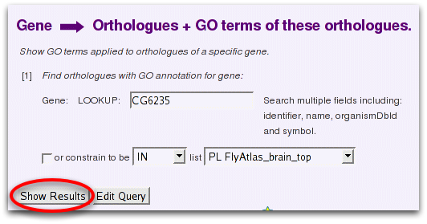

Template queries are simple web forms with one or more fields to fill in. This query takes a particular gene as input and searches for orthologues that that have GO annotation.
Here you can enter any identifier and FlyMine will try to find the right gene, even if it is not a primary identifier. For example for the D. melanogaster gene zen you could enter 'zen', 'CG1046', 'FBgn0004053', 'zerknullt'. You could even enter a transcript (CG1046-RA) or protein (ZEN1_DROME) identifier and it would convert it for you.
Click 'Show Results' to run this template with the default value.
